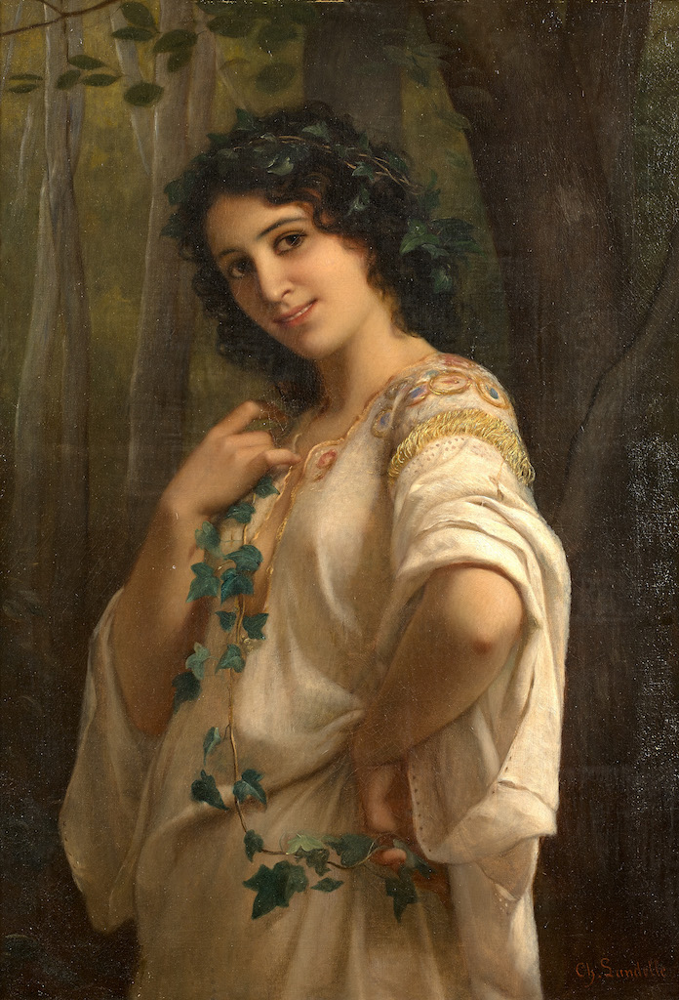

Dialogue 1 :
Inspecteur Durkheim :
Assurez-vous de dire que la vérité rien que la vérité ?
Silvia Mollinski :
Je le jure...
Inspecteur Durkheim :
Où étiez-vous le jour du meurtre d'Édouard Mollinski ?
Silvia Mollinski :
J'étais toute la journée avec mon grand frère et ma petite soeur, bien sûr ça m'arrivait de bouger un peu... J'avais perdu mon poisson-lune et personne ne savais où y se trouver du coup j'ai visité toutes les pièces de la maison, je suis même allé dans le grenier proche de notre chambre mais je n'ai rien pu voir il faisait trop noir du coup je me suis plantée dans le salon avec mes frères et soeurs, mais je suis pas trop intéressante, ils pensent qu'à l'amour, à fonder une famille, des trucs de vieux qui veulent finir gros sur un canapé...
Inspecteur Durkheim :
Je vois, avez-vous des suspicions sur la personne qui aurait pu s'attaquer à votre père ?
Silvia Mollinski :
Je dirais... aucune idée ! Au début j'étais triste qu'il soit mort puis maintenant ça m'importe peu, je me dis que les gens vivent et meurent, c'est le cycle de la vie... et la sélection naturelle, ils avaient qu'a être plus malin et s'entourer des bonnes personnes !
Inspecteur Durkheim :
D'accord merci de ton témoignage....
Dialogue 2 :
Silvia Molinski
...